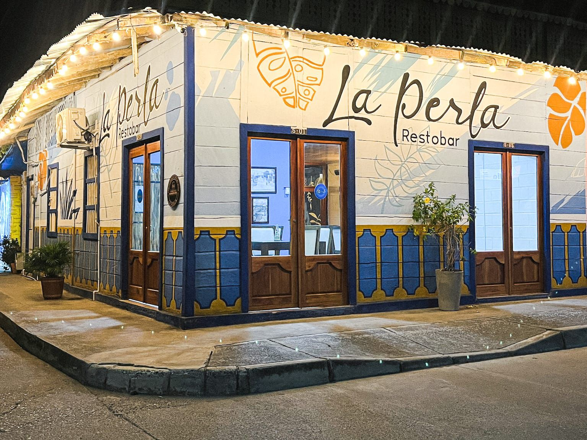

Vive
Tierralta
Inglés
Español
La gastronomía de Tierralta, Córdoba, es una experiencia auténtica de la cultura caribeña, caracterizada pro sabores intensos, ingredientes frescos y recetas tradicionales que han pasado de generación en generación.
En este municipio, la comida no solo alimenta, sino que también cuenta historias, reflejan costumbres y fortalece la identidad de su gente. Los platos combinan productos locales como el plátano, el ñame, la yuca, el coco, el maíz y el pescado, creando una experiencia culinaria única que deleita a locales y visitantes.

Saborea los sabores auténticos de la costa caribeña: desde un contundente mote de queso hasta un bocachico recién frito, servido con plátanos y aguacate.
Explora →
Panaderías, restobares, heladerías y restaurantes criollos son los mejores lugares locales para comer, compartir y disfrutar de la escena culinaria de Tierralta.
Explora →